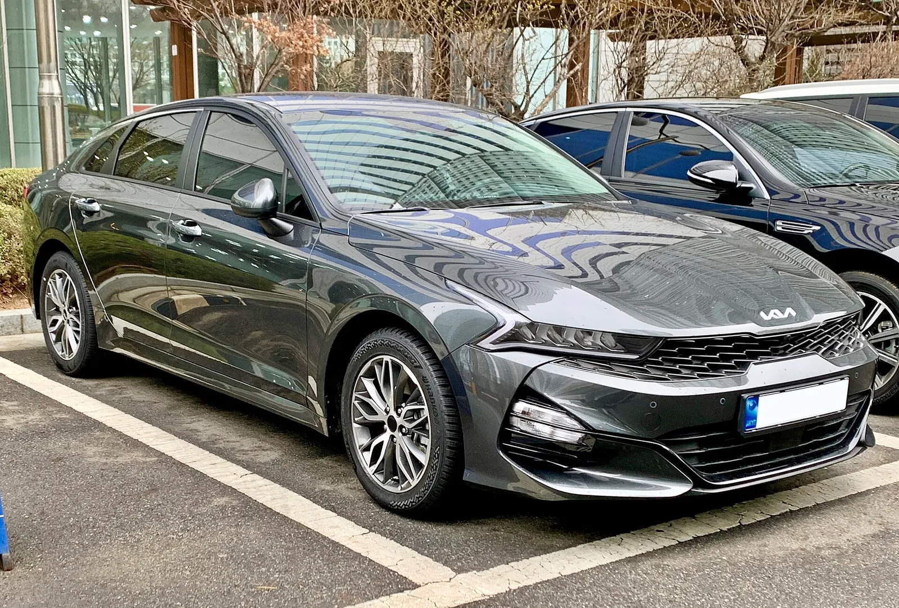
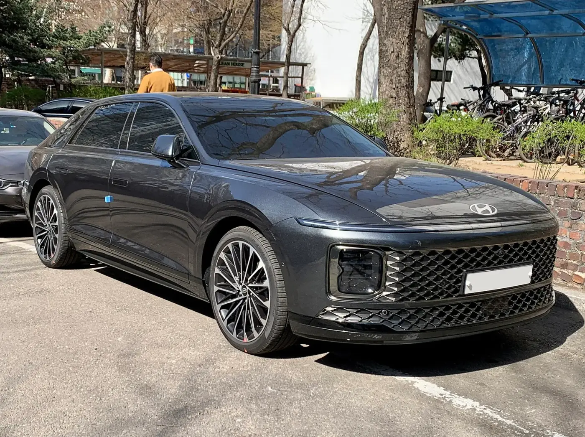
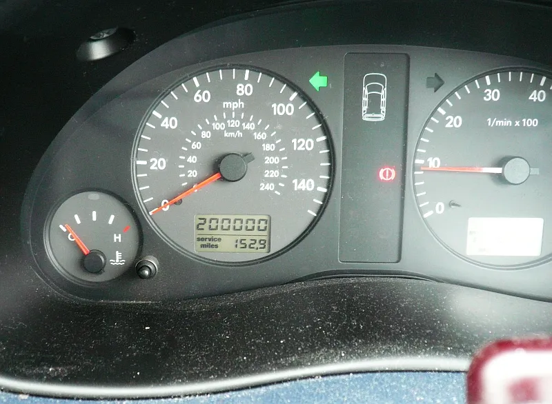
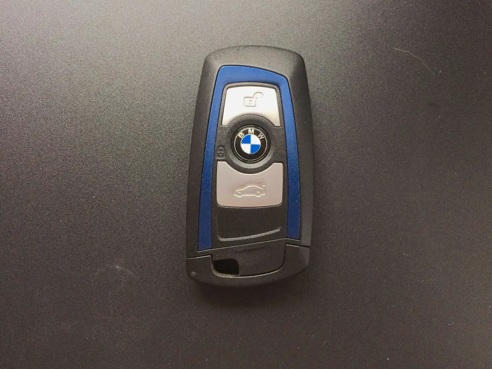

▲ 리스·렌트 이용이 많은 중형 세단. 해지 비용은 차종보다 계약 조건이 좌우한다 ⓒ Benespit / Wikimedia Commons (CC BY-SA 4.0)
"3년 타다 사정이 생겨서 끊으려는데, 위약금이 얼마나 나오죠?" 리스·장기렌트는 계약서에 서명하기 전에는 월 납입액만 눈에 들어오지만, 중간에 그만두려는 순간 남은 기간·미회수원금·위약금률이 한꺼번에 튀어나온다. 이 글은 신차 계약 취소가 아니라 이미 출고해 타고 있는 계약의 중도해지만 다룬다. 계약 취소 위약금은 신차 계약 취소 위약금 비교 기사, 세 상품의 월 납입액 비교는 리스·할부·렌트 비교 가이드, 구독형 상품 흐름은 구독·장기렌트 동향 기사에서 다뤘다.
표준약관의 조항 문구는 1차 자료(자동차리스 표준약관 게시본)에서 확인했지만, 실제 위약금률은 계약서마다 다르다. 계산표의 위약금률은 모두 카프리즘 가정이며 실제 금액이 아니다.
1. 같은 '월 납입'이어도 해지 구조는 세 갈래다
해지 비용을 이해하려면 먼저 내가 쓰는 상품이 어느 쪽인지 알아야 한다. 아래는 표준약관 구조와 일반적인 설명을 카프리즘이 정리한 것이다.
| 구분 | 중도해지 시 선택지 | 위약금 기준 | 비고 |
|---|---|---|---|
| 금융리스 | 차량을 매입(규정손해배상금 지급) | 미회수원금 × 규정손해배상금률 (표준약관 제23조 제2항) | 리스 종료 시 잔존가치 위험이 고객 쪽에 가까움 |
| 운용리스 | 차량을 반환(중도해지손해배상금 지급) | 미회수원금 × 중도해지손해배상금률, 최초 계약 잔여 리스료 합계 이내 (제24조 제2항). 반환 대신 매입하면 제23조 제3항 | 약정 주행거리·반환 상태 정산이 따로 붙을 수 있음 |
| 장기렌트 | 차량 반납 | 업체 약관의 위약금 조항 (잔여 대여료 대비 비율로 설명되는 경우 많음) | 리스 표준약관 적용 대상 아님, 업체별로 달라 단정 불가 |
▲ 계약서의 해지 조항·요율 표를 먼저 펼쳐 보는 것이 출발점이다(설명용 AI 생성 예시 이미지) ⓒ CarPrism (AI 생성 이미지)
📍 표준약관 출처와 한계
리스 표준약관 조문(제21~24조·제26조·제27조·제32조)은 신한카드가 공개한 "자동차리스 표준약관" 게시본(2022년 4월 1일 시행본이 최신으로 표시됨)에서 전문을 직접 열어 대조했다. 공정거래위원회·금융감독원·여신금융협회의 표준약관 원문 PDF는 재검색·재시도에도 열람하지 못했다(검색에서 나온 공정위 자료는 아주캐피탈 개별 약관 사건 결정문이라 표준약관 원문이 아니었다). 따라서 "신한카드 게시본 기준"이라는 한계는 그대로 남는다. 계약 체결 시점의 약관 버전은 다를 수 있으므로 내 계약서의 현행 조항이 우선한다.
2. 표준약관이 정한 것 — 상한, 해지 사유, 전손 면책
핵심은 "요율 자체는 약관에 숫자로 못 박혀 있지 않고, 계산 구조와 상한만 있다"는 점이다.
| 조항 | 내용 요약 | 실무 의미 |
|---|---|---|
| 제21조 (중도해지) | ① 고객이 해지하려면 해지일 10일 전 금융회사에 사전 통보. ④ 월 리스료 2회 이상 연속 지체 시 금융회사가 지체 사실과 해지를 해지일 3영업일(고객이 가계인 경우 7영업일) 전까지 통지한 뒤 해지·반환 청구 가능. 그 기한까지 통지하지 않았다면 실제 통지가 도달한 날부터 3영업일(가계 7영업일)이 지난 날이 해지일. ⑤ 도난·전손 시 보험금 수령일에 해지된 것으로 봄 | 일반 해지는 사전 통보가 필수, 연체 해지는 회사가 통지 절차를 밟아야 효력이 생긴다 |
| 제22조 제2항 | 고객 과실 없이 도난·전손으로 해지되면 중도해지손해배상금·규정손해배상금 지급 의무 없음 | 타인 과실 전손 사고 시 위약금 면제 근거 |
| 제22조 제1·7·9항 | ① 금융회사는 손해배상금의 부과 근거·요율을 사전에 설명하고 홈페이지에 게시. ⑦ 돌려줄 리스보증금에서 받을 금액을 충당 가능. ⑨ 중도해지 정산내역을 서면·이메일 등으로 통지 | 요율과 정산 내역을 서면으로 요구할 근거 |
| 제22조 제3항 | 도난·전손에 고객 과실이 있으면 규정손해배상금 지급 의무 부담 | 과실 정도·보험 처리 방식에 따라 달라질 수 있음 |
| 제23조 (규정손해배상금) | ② 금융리스와 ③ 운용리스(매입 시) 모두: 해지일 현재 미회수원금 × 약정 규정손해배상금률. 규정손해배상금과 미회수원금 합계는 최초 계약 잔여 리스료와 잔존가치 합계 이내. ④ 요율은 기간 경과에 따라 연·월·일 단위로 인하(잔존 1년 이하는 월·일 단위) | 차량을 매입하며 끝낼 때의 상한. 게시본에서 항별로 확인한 결과 이 상한은 금융리스 항뿐 아니라 운용리스 매입 항에도 적용된다 |
| 제24조 (중도해지손해배상금) | 운용리스 ② 미회수원금 × 약정 중도해지손해배상금률, 최초 계약 잔여 리스료 합계 이내. ③ 요율은 기간 경과에 따라 연·월·일 단위로 인하(잔존 1년 이하는 월·일 단위). ④ 요율은 금융회사와 고객이 사전에 계약한 바에 따름 | 반환하며 끝낼 때의 상한 |
| 제32조 (승계) | 제3자 승계는 금융회사 심사기준에 따라 승인. 승계수수료 = 미회수원금 × 승계수수료율 | 해지 대신 넘기는 방법 |
공정위는 2016년 10월 13일 약관 시정 발표에서 고객 과실 유무와 관계없이 도난·전손 시 위약금을 부과하는 조항을 불합리하다고 보고 삭제하도록 했다고 보도됐다(뉴스토마토 2016.10.13 보도). 또 2015년 9월 금융당국 개선안 보도에서는 기존에 남은 기간과 무관하게 일률 10%를 부과하던 중도해지수수료율을 잔여 기간에 따라 낮추는 방향이 제시됐다(뉴데일리 2015.09.09). 보도 예시는 리스가액 1,800만 원·60개월 계약에서 1일 후 10%, 1년 후 9%, 2년 후 8%, 3년 후 7%이며, 3년 후 해지하면 수수료가 기존 108만 원에서 75만 원으로 줄어드는 구조다. 이 수치는 보도된 예시이고 현행 개별 회사 약관의 요율이 아니다. 현행 표준약관은 요율을 숫자로 정하지 않고 "리스기간이 경과함에 따라 연 단위·월 단위·일 단위로 차등하여 인하하되, 잔존일수가 1년 이하이면 월 단위 또는 일 단위로 인하"(제23조 제4항, 제24조 제3항)하도록만 정한다. 아래 계산의 요율 하향 가정은 이 조항을 근거로 한다.
✅ 계약서에서 형광펜 칠할 곳
· 중도해지손해배상금률(또는 규정손해배상금률) 숫자와 잔여 기간별 구간표 유무
· 해지 통보 기한(표준약관은 10일 전)과 해지 방법
· 보증금·선수금을 위약금과 어떻게 정산하는지, 차량 반환 시 감가 정산 조항
· 승계 가능 여부와 승계수수료율
3. 위약금은 이렇게 계산한다 — 카프리즘 산식과 가정
표준약관 구조를 그대로 옮기면 중도해지손해배상금 = 미회수원금 × 요율(상한: 잔여 리스료 합계)이다. 미회수원금은 월 리스료에 포함된 원금이 아직 갚아지지 않은 잔액(잔존가치 포함)이라 시간이 지날수록 줄어든다. 계산을 위해 아래 가정을 세웠다.
| 항목 | 가정값 | 설명 |
|---|---|---|
| 월 리스료 | 80만 원 | 요청 예시 |
| 계약 기간 | 60개월 | 총 납입 4,800만 원 |
| 차량 취득가액 | 5,500만 원 | 월 80만 원이 나오도록 역산한 가정 |
| 잔존가치 | 2,200만 원 (취득가의 40%) | 만기 시 미회수원금 |
| 내재 금리 | 명목 연 약 7.5% (월 약 0.628%×12) | 취득가·잔존가치·월 리스료로 역산 |
| 중도해지 요율 | 12개월 9%, 24개월 8%, 36개월 7%, 48개월 6% | 2015년 개선안 보도의 "연 1%p 하향" 구조를 차용한 가정. 보도 예시는 3년 후 7%까지이고, 이후(48개월 6%)는 같은 폭으로 이어 붙인 외삽(카프리즘 가정)이다. 하향 자체의 근거는 제24조 제3항 |
| 보증금·선수금 | 0원 | 정산은 별도 확인 사항 |
미회수원금은 월 이자(약 0.628%)를 붙이고 월 80만 원을 차감하는 방식으로 매월 계산했다(카프리즘 계산, 반올림). 이 모형은 원리금균등 방식을 가정한 것이라 실제 회사의 미회수원금과 다를 수 있다.
▲ 미회수원금과 잔여 리스료를 직접 계산해 보는 장면(설명용 AI 생성 예시 이미지) ⓒ CarPrism (AI 생성 이미지)
4. 월 80만 원·60개월 계약, 몇 개월 차에 끊으면 얼마인가
| 해지 시점 | 잔여 개월 | 잔여 리스료 | 미회수원금(가정) | 요율(가정) | 가정 위약금 | 잔여 리스료 대비 |
|---|---|---|---|---|---|---|
| 12개월 차 | 48 | 3,840 | 4,935 | 9% | 약 444 | 약 11.6% |
| 24개월 차 | 36 | 2,880 | 4,326 | 8% | 약 346 | 약 12.0% |
| 36개월 차 | 24 | 1,920 | 3,670 | 7% | 약 257 | 약 13.4% |
| 48개월 차 | 12 | 960 | 2,963 | 6% | 약 178 | 약 18.5% |
같은 금액을 "그냥 계속 내면 되는" 잔여 리스료와 비교하면 해지의 득실이 보인다. 예컨대 24개월 차에 끊으면 남은 2,880만 원을 내지 않는 대신 약 346만 원을 내는 구조다. 다만 이 계산은 차량을 반환하고 끝낸다고 가정했다. 차량을 계속 타야 하는 금융리스형 매입 해지는 아래와 같이 미회수원금이 통째로 들어가므로 금액이 크게 달라진다.
| 해지 시점 | 미회수원금(가정) | 가정 규정손해배상금 | 매입 시 합계 | 비고 |
|---|---|---|---|---|
| 12개월 차 | 4,935 | 444 | 약 5,379 | 시세와 비교해 팔아서 정산할지 판단 |
| 24개월 차 | 4,326 | 346 | 약 4,672 | 〃 |
| 36개월 차 | 3,670 | 257 | 약 3,927 | 〃 |
| 48개월 차 | 2,963 | 178 | 약 3,141 | 〃 |
📍 표 읽는 법
가정 위약금은 해지 수수료 성격이고, 매입형은 거기에 차량 값(미회수원금)이 얹힌다. 차를 되파는 시세가 합계보다 높으면 차액이 남고 낮으면 손실이다. 취득가 5,500만 원 차량이 24개월 뒤 얼마에 팔릴지는 가정하지 않았다. 실제 정산은 보증금·선수금 충당, 차량 상태 감가, 연체이자에 따라 달라진다.
제23조 상한(규정손해배상금 + 미회수원금 ≤ 잔여 리스료 + 잔존가치)도 같은 가정으로 대입해 봤다.
| 해지 시점 | 매입 시 합계 | 상한(잔여 리스료 + 잔존가치 2,200) | 여유 | 상한에 걸리는 요율 |
|---|---|---|---|---|
| 12개월 차 | 5,379 | 6,040 | 661 | 약 22.4% 초과 |
| 24개월 차 | 4,672 | 5,080 | 408 | 약 17.4% 초과 |
| 36개월 차 | 3,927 | 4,120 | 193 | 약 12.3% 초과 |
| 48개월 차 | 3,141 | 3,160 | 19 | 약 6.66% 초과 |
가정 요율(9~6%)로는 모두 상한 이내지만, 만기가 가까울수록 상한과 합계가 붙는다. 48개월 차에 요율이 6.66%를 넘는 계약이라면(예: 7%이면 약 3,170만 원) 상한 3,160만 원이 먼저 걸린다. 약정 요율과 상한이 충돌할 때의 실제 정산은 회사 설명을 서면으로 받아야 한다.

▲ 리스·장기렌트로 많이 타는 중형 세단. 월 납입액과 해지 시 정산액은 차종·계약 조건마다 다르다 ⓒ Benespit / Wikimedia Commons (CC BY-SA 4.0)
5. 장기렌트는 계산이 다르다 — 잔여 대여료 × 비율?
장기렌트(자동차대여)는 차량 소유권이 렌터카 회사에 있고, 중도해지 조건은 업체의 대여 약관이 정한다. 업계 설명 글에서는 "잔여 대여료의 일정 비율(통상 20~40%)"로 소개되지만 이는 블로그 수준의 일반론이고, 이번 조사에서 업체별 실제 약관은 확인하지 못했다. 아래는 같은 월 80만 원·60개월을 가정한 시나리오다.
| 해지 시점 | 잔여 대여료 | 비율 20% | 비율 30% | 비율 40% |
|---|---|---|---|---|
| 12개월 차 | 3,840 | 768 | 1,152 | 1,536 |
| 24개월 차 | 2,880 | 576 | 864 | 1,152 |
| 36개월 차 | 1,920 | 384 | 576 | 768 |
| 48개월 차 | 960 | 192 | 288 | 384 |
한국소비자원의 장기렌터카 조사를 다룬 문화일보 보도(2018.6.22)에 따르면 2013~2017년 5년간 접수된 상담은 1,729건이었고, 이 중 피해구제를 신청한 71건에서 일방적 계약해지가 25.4%, 중도해지 시 과도한 위약금 청구가 23.9%(71건 기준 약 17건 환산)였다. 23.9%의 분모는 전체 상담 1,729건이 아니라 피해구제 71건이다. 상위 10개 업체 중 6곳은 대여료 1회 연체만으로 해지가 가능했고 6곳은 이용약관을 홈페이지에 게시하지 않았다고 한다. 소비자원이 연체 사전 고지 강화와 소비자가 오인할 수 있는 표현의 자율시정을 권고했고 사업자들이 이를 개선하기로 했다고 밝혔다. 8년 전 조사이고 개선 합의 이후 약관 현황은 확인하지 못했으므로 지금도 같다고 볼 수는 없지만, "잔여 대여료의 몇 %인가"와 "연체 해지 조건"을 먼저 확인해야 한다는 점은 유효하다.
▲ 캐나다 밴쿠버 공항의 렌터카 영업소 카운터. 국내 장기렌트 업체와는 무관한 참고 사진이며, 해지·반납 조건은 업체별 약관이 정한다 ⓒ GoToVan / Wikimedia Commons (CC BY 2.0)

▲ 장기렌트·리스 이용이 많은 대형 세단. 상품 구분과 해지 조건은 차종이 아니라 계약서가 정한다 ⓒ Benespit / Wikimedia Commons (CC BY-SA 4.0)
6. 해지 사유별로 달라지는 조건
"이사 가서 차가 필요 없어졌다", "사고로 폐차됐다", "소득이 줄었다" 같은 사유에 따라 위약금이 달라지는지가 가장 궁금한 부분이다. 확인된 것과 확인 못 한 것을 나눠 적는다.
| 사유 | 위약금 여부 | 근거·메모 |
|---|---|---|
| 타인 과실 사고로 전손 | 면제 가능성 높음(리스) | 표준약관 제22조 제2항 — 고객 과실 없는 도난·전손은 지급 의무 없음 |
| 내 과실 사고로 전손·폐차 | 규정손해배상금 부담 가능 | 제22조 제3항. 보험 보상금·자차 처리 방식에 따라 실제 부담이 달라지는지는 확인 못 함 |
| 이사·직장 이동 등 개인 사정 | 일반 중도해지와 동일 적용으로 보임 | 면제 사유로 규정된 조항은 확인하지 못했다 |
| 경제 사정 악화 | 면제 사유 아님으로 보임 | 월 리스료 2회 연속 지체 시 회사가 해지·반환 청구할 수 있어(제21조 제4항) 연체가 쌓이기 전에 승계·협의가 유리 |
| 월 리스료 연체로 회사 해지 | 위약금 + 연체이자 부담 가능 | 장기렌트는 1회 연체로 해지 가능한 업체도 있었다는 소비자원 조사 보도(2018) 있음, 이후 업체들이 사전 고지를 강화하기로 했다는 후속 내용만 확인 |
| 상속·사망 | 약관마다 다름 | 확인 못 함, 회사 문의 필요 |
▲ 방치된 폐차 수준의 노후 차량(참고용). 사진은 미국에서 촬영된 것이며 국내 리스 사고·전손 사례와 직접 관련은 없다 ⓒ Sean Stratton / Wikimedia Commons (CC0)
✅ 전손·폐차 때 확인할 것
· 사고 과실 비율이 확정되기 전에 리스사에 사고 접수 사실을 알리고 해지 절차를 문의할 것
· 고객 과실이 없다면 위약금 면제 조항이 있는지 약관 번호까지 확인(과실 비율은 과실비율 가이드 참고)
· 보험사가 지급하는 차량가치 보상금과 리스사가 청구하는 정산금이 어떻게 맞춰지는지 문서로 받을 것
7. 끊기 전에 — 승계(양도)와 반납 정산
위약금이 부담스럽다면 계약을 다른 사람에게 넘기는 승계가 대안이 될 수 있다. 표준약관 제32조는 금융회사가 신규 리스 체결과 같은 심사기준에 따라 승인할 수 있고, 승계수수료는 미회수원금 × 승계수수료율로 산정하며 요율은 잔여 기간에 따라 인하하되 최소·최대 금액을 약정서에 정할 수 있다고 규정한다(게시본 기준). 겟차의 설명 글은 양도 수수료가 약 10~30만 원 발생할 수 있고 양수자의 신용등급·소득이 일정 기준을 충족해야 한다고 소개한다. 이 금액은 블로그 수준의 설명이라 회사별 실제 수수료율·최소·최대 금액은 확인하지 못했다.
| 항목 | 중도해지(반환) | 승계 |
|---|---|---|
| 내 부담 | 가정 위약금 약 346만 원 | 승계수수료 가정 약 43만 원(미회수원금 4,326만 원 × 1%). 겟차는 양도 수수료를 약 10~30만 원으로 소개 |
| 조건 | 사전 통보 10일 전, 반환 정산 | 양수인 심사 통과(신용등급·소득 기준은 겟차 설명) |
| 남는 위험 | 반환 시 감가·초과 주행 정산 | 양수인 연체 시 책임 범위는 계약서 확인 필요 |
| 장기렌트 | 업체 약관의 위약금 | 승계 허용 여부·수수료는 업체별(확인 못 함) |
▲ 승계나 반납 때는 인수인계 시점의 차량 상태를 기록해 두는 편이 안전하다(설명용 AI 생성 예시 이미지) ⓒ CarPrism (AI 생성 이미지)
반납 때는 감가 정산이 따로 붙는다. 표준약관 제26조는 반환 자동차의 기대가치 대비 감가 사유가 있으면 고객에게 설명하고 동의를 받은 후 청구하며(감가금액 = 반환 시점 기대가치 × 감가율의 합), 평가 결과에 이의가 있으면 상호 협의한 별도 평가기관의 결과를 참고할 수 있다고 정한다(게시본 기준). 운용리스에서 약정 주행거리를 넘겼다면 제27조에 따라 초과운행거리(km) × km당 초과운행료가 따로 붙을 수 있다. 사업자 리스·렌트의 세무 처리는 사업자 리스·렌트 세금 혜택 기사를 참고하라.

▲ 반납 정산에서는 약정 주행거리 대비 실제 계기판 주행거리가 기준이 된다(영국 차량 계기판 예시, 국내 계약과 무관) ⓒ Andy / Andrew Fogg / Wikimedia Commons (CC BY 2.0)
▲ 해지 상담은 구두가 아니라 서면 산정서를 요청하는 것이 기본이다(설명용 AI 생성 예시 이미지) ⓒ CarPrism (AI 생성 이미지)
8. 해지·승계·매입·유지, 24개월 차에 어느 쪽이 싼가
같은 가정(월 80만 원·60개월, 24개월 차, 요율 8%)으로 선택지를 나란히 놓으면 "지금 내는 돈"과 "이후 부담"이 다르게 갈린다. 승계수수료 1%는 임의 가정이다.
| 선택지 | 지금 내는 돈 | 이후 부담 | 남는 조건 |
|---|---|---|---|
| 유지(만기 반납) | 0 | 잔여 리스료 2,880 | 차를 계속 사용, 만기 반납 시 감가·초과 주행 정산 별도 |
| 중도해지(반환) | 약 346 (4,326 × 8%) | 잔여 리스료 면제 | 차량 반환, 감가·초과 주행 정산 별도, 이동수단 대체 비용 발생 |
| 승계 | 약 43 (4,326 × 1%, 0.5~2%이면 약 22~87) | 양수인이 부담 | 금융회사 심사 통과 필요, 겟차는 약 10~30만 원 소개(블로그 수준) |
| 매입 | 약 4,672 (4,326 + 346) | 차량 소유 | 시세가 4,672만 원보다 높아야 손실이 없음, 이전·근저당 말소 수수료 별도(제22조 제1항) |
해지가 "싼가"는 해지한 뒤 이동수단을 어떻게 메우느냐에 달렸다. 잔여 리스료에서 가정 위약금을 뺀 순절감을 남은 개월 수로 나누면, 해지 후 대체 이동수단에 쓰는 월 비용이 이 금액보다 낮을 때만 해지가 이득이다.
| 해지 시점 | 잔여 리스료 | 가정 위약금 | 순절감 | 월 환산(순절감 ÷ 잔여 개월) |
|---|---|---|---|---|
| 12개월 차 | 3,840 | 444 | 3,396 | 약 70.7 |
| 24개월 차 | 2,880 | 346 | 2,534 | 약 70.4 |
| 36개월 차 | 1,920 | 257 | 1,663 | 약 69.3 |
| 48개월 차 | 960 | 178 | 782 | 약 65.2 |
월 80만 원짜리 계약이라도 해지로 실제 줄어드는 월 부담은 약 65~71만 원이다. 대중교통·카셰어링 등으로 그보다 적게 쓰면 해지가 유리하고, 해지 후 비슷한 월 납입의 새 차를 계약한다면 위약금만큼 손해다(산술 비교일 뿐 감가 정산·보증금 충당은 반영하지 않았다). 승계가 되면 위약금 없이 부담을 넘길 수 있어 가장 유리하지만, 승인 여부는 양수인 심사에 달려 있다.

▲ 승계·반납 때는 차 키 수량과 인도 시점을 서면으로 남겨 두는 편이 안전하다(차 키 예시 사진, 특정 계약과 무관) ⓒ Adder3824 / Wikimedia Commons (CC BY-SA 4.0)
9. 민감도 — 요율 ±1%p, 잔존가치 ±10%면 얼마나 달라지나
가정이 틀렸을 때 결과가 얼마나 흔들리는지 확인했다. 요율은 ±1%p를 더하고 빼며, 잔존가치는 내재금리(월 약 0.628%)를 고정하고 월 리스료가 바뀌는 방식으로 계산했다.
| 해지 시점 | 미회수원금 | 기준 요율 | 요율 -1%p | 기준 | 요율 +1%p |
|---|---|---|---|---|---|
| 12개월 차 | 4,935 | 9% | 395 | 444 | 494 |
| 24개월 차 | 4,326 | 8% | 303 | 346 | 389 |
| 36개월 차 | 3,670 | 7% | 220 | 257 | 294 |
| 48개월 차 | 2,963 | 6% | 148 | 178 | 207 |
| 잔존가치 | 월 리스료 | 미회수원금 | 잔여 리스료 | 위약금 7% | 위약금 8% | 위약금 9% |
|---|---|---|---|---|---|---|
| 1,980 (-10%) | 약 83.0 | 4,248 | 2,989 | 297 | 340 | 382 |
| 2,200 (기준) | 80.0 | 4,326 | 2,880 | 303 | 346 | 389 |
| 2,420 (+10%) | 약 77.0 | 4,405 | 2,771 | 308 | 352 | 396 |
요율이 1%p 움직이면 24개월 차 위약금이 약 43만 원 변하지만, 잔존가치가 ±10%(±220만 원) 달라져도 위약금은 약 ±6만 원밖에 변하지 않는다. 잔존가치를 낮게 잡을수록 월 리스료가 올라 잔여 리스료 총액이 커지므로(2,989만 원 대 2,771만 원) 잔존가치의 영향은 위약금보다 월 납입과 잔여 리스료 쪽에 크다. 따라서 해지를 고려한다면 잔존가치보다 계약서의 기간별 요율 구간표부터 확인하는 편이 효과적이다. 감가 흐름과 잔존가치 감각은 차종별 감가율 순위 기사를 참고할 수 있다.
📍 이 분석의 한계
미회수원금은 원리금균등을 가정한 카프리즘 모형이고(회사 실제 방식은 확인 못 함), 요율·승계수수료율·잔존가치는 모두 가정이다. 보증금·선수금, 감가·초과 주행 정산, 연체이자는 포함하지 않았다. 표의 수치는 node로 직접 검산했다.
10. 해지 전 5단계 체크리스트
| 순서 | 할 일 | 확인 포인트 |
|---|---|---|
| 1 | 계약서에서 상품 구분 확인 | 금융리스·운용리스·장기렌트 중 어디인지 |
| 2 | 서면 정산서 요청 | 미회수원금, 위약금률, 보증금 충당액, 감가 정산 항목 |
| 3 | 사유가 전손·도난인지 점검 | 고객 과실 여부, 보험 처리 결과 |
| 4 | 승계 가능성 타진 | 심사 기준, 수수료율, 양수인 후보 |
| 5 | 해지 통보 시점 결정 | 표준약관 기준 해지일 10일 전, 다음 월 납입일 전. 해지 후 자동차보험은 보험 해지·환급 기사 참고 |
11. 요약
리스 중도해지 비용은 "남은 월 납입액 전부"가 아니라 "미회수원금 × 요율"이며, 운용리스는 잔여 리스료 합계가 상한이다. 고객 과실 없는 도난·전손은 표준약관상 위약금 지급 의무가 없다. 실제 요율은 계약서마다 달라 일반화할 수 없다.
월 80만 원·60개월, 요율 9~6% 가정에서 운용리스 반환형 위약금은 12개월 차 약 444만 원, 24개월 차 약 346만 원, 36개월 차 약 257만 원, 48개월 차 약 178만 원이다. 차를 계속 타야 하는 매입형은 미회수원금이 더해져 금액이 훨씬 커진다. 장기렌트는 업체 약관을 따르며 잔여 대여료 20~40%라는 설명은 일반론일 뿐 확정이 아니다.
새로 계산한 민감도에서는 요율 1%p가 24개월 차 위약금 약 43만 원, 잔존가치 ±10%는 약 ±6만 원 차이였고, 해지 후 대체 이동수단 비용이 월 약 65~71만 원보다 낮을 때만 해지가 이득이다.
사정이 생기면 해지 전에 서면 정산서와 승계 가능성부터 확인하자. 신차 계약 단계의 취소는 계약 취소 위약금 기사를 참고하면 된다.